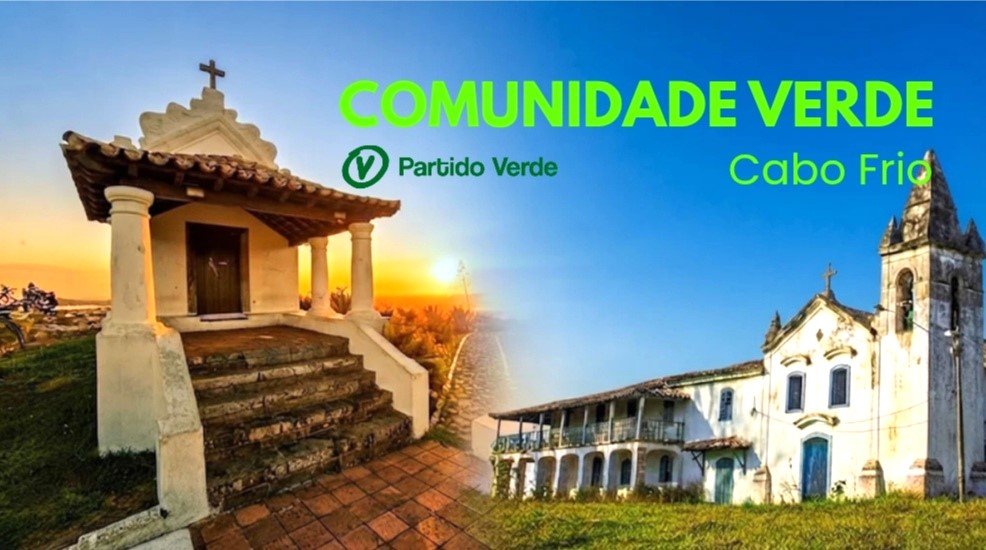

Construindo Pontes, Fiscalizando Recursos
Conheça o movimento Comunidade Verde e a 4ª Escolha para Cabo Frio: inteligência cívica e participação popular.
Ferramentas do Observatório Verde
Acesse os debates livres ou solicite liberação para os painéis de controle
Fórum Permanente
Editorial do movimento com postagens independentes, vídeos e propostas populares.
Agenda nos Bairros
Calendário vivo das plenárias, reuniões comunitárias e visitas técnicas em Cabo Frio.
Orçamento Municipal
Painel de receitas, royalties e acompanhamento detalhado da execução orçamentária.
Câmara Municipal
Acompanhamento de projetos, produtividade dos vereadores e votações nominais.
Artigos, Pautas e Debates da Cidade
Publicações oficiais do movimento. Imprima ou compartilhe cada pauta de forma individual.
Agenda nos Bairros
Acompanhe as plenárias, reuniões comunitárias e visitas técnicas do movimento em Cabo Frio.
Orçamento Municipal (Entradas)
Discriminação oficial das fontes de receita, royalties e repasses atualizados em tempo real.
Monitoramento da Câmara Municipal
Acompanhe a produção legislativa, o tradutor cidadão de pautas e o voto nominal de cada vereador de Cabo Frio.